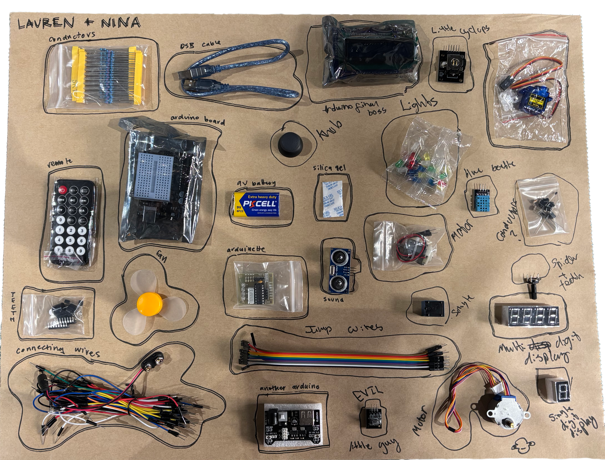
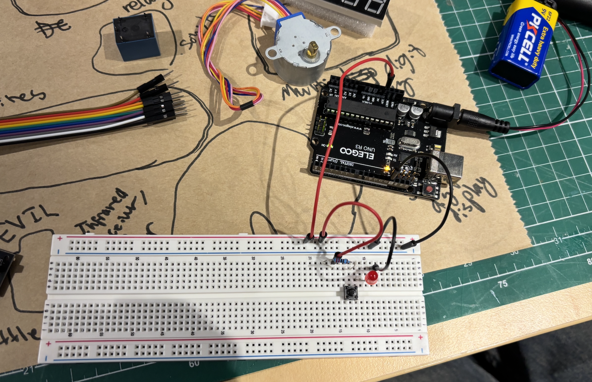
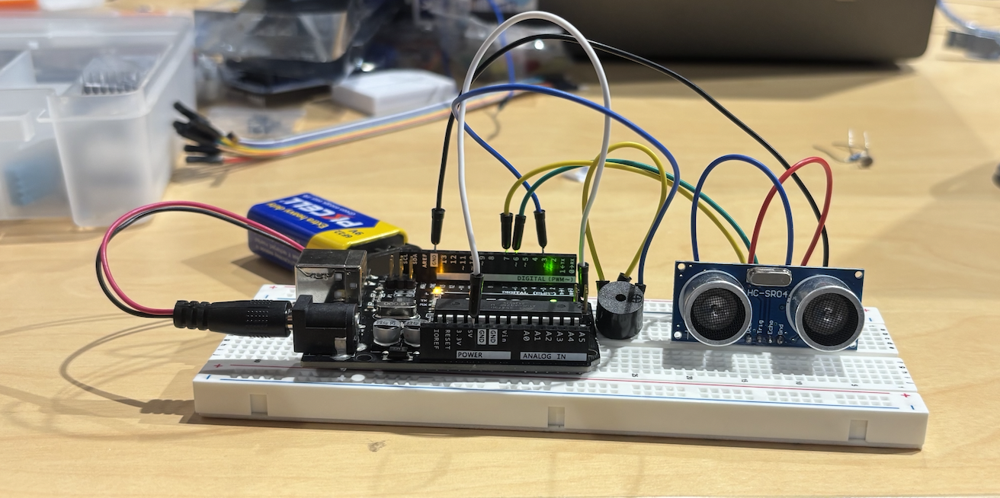
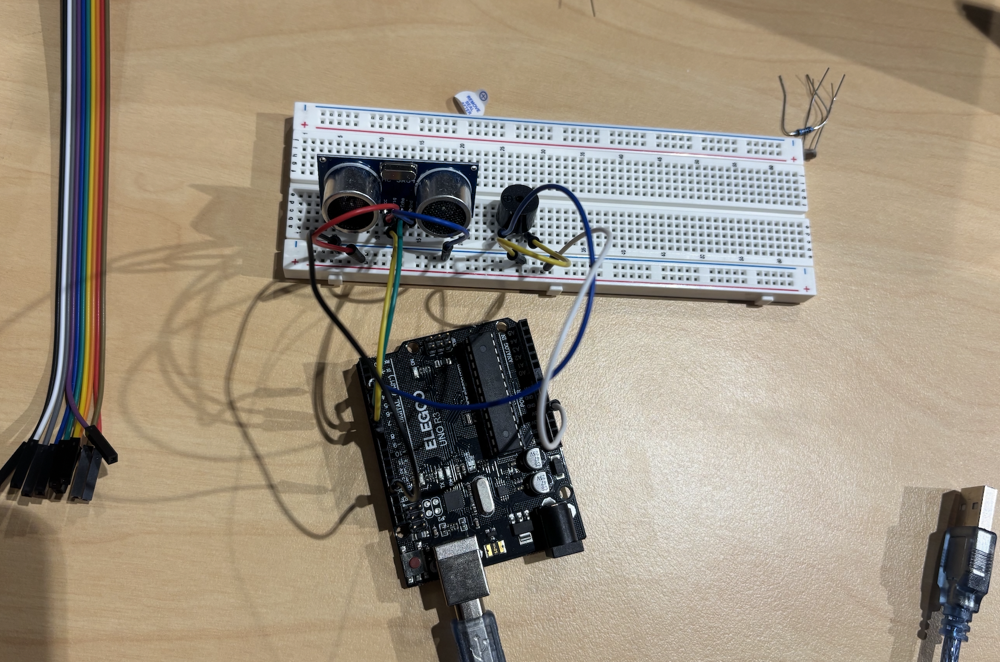
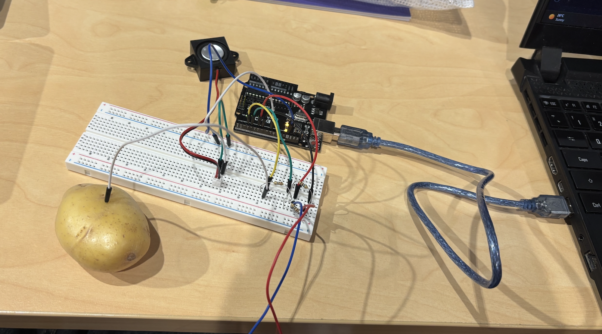

Week 1 at the Telstra Creator Space. Lauren and I worked together to see if we could identify any parts found in the kit. We couldn't.

In the first experiment, we had fun plugging the wires and LEDs into the breadboard. Using rudimentary physics to aid our understanding of voltage and resistors.

Week 2 at the Telstra Creator Space where we started playing with motion sensors which were connected to tiny speakers. The sound was horrendous but the task was really fun.

This was our breadboard setup.

Week 3 at the Telstra Creator Space. Here we created an instrument out of a potato. This was a really great point for me as I started to learn how to trouble shoot and solve problems myself. I began to understand what each plug meant, and how it translated code through the wire to determine an end result. This, alongside the week 2 class activity, grounded the final project's inception.